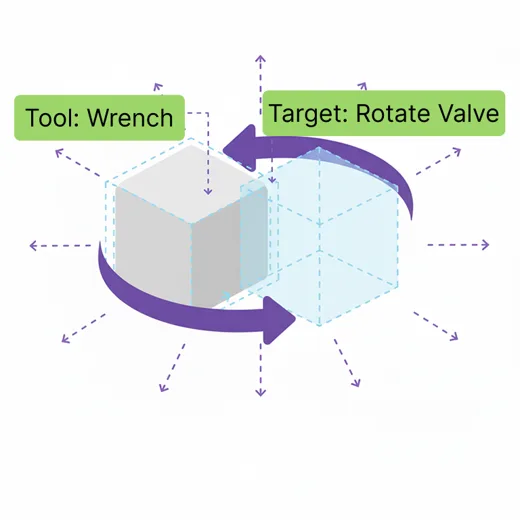
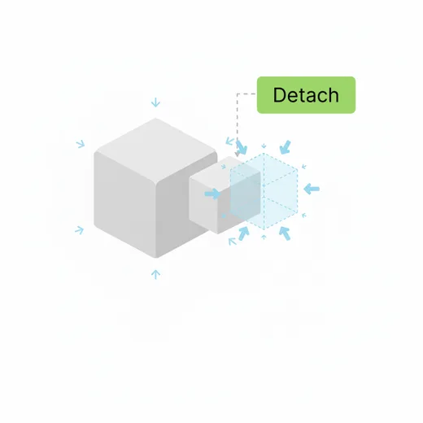
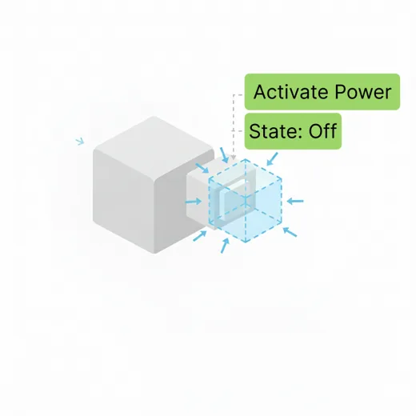
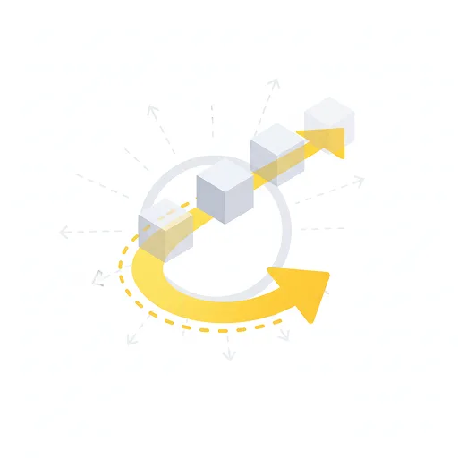
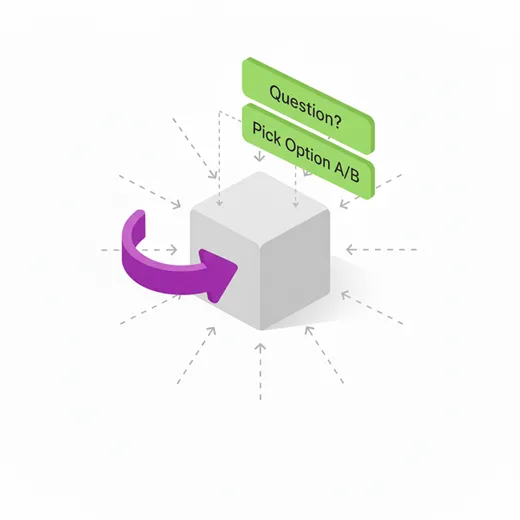
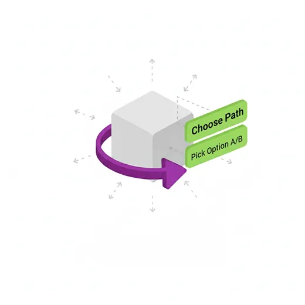

Designing complex software that people learn by doing
I spent four years designing the products at ORamaVR, a Geneva company that makes training software for surgeons and other clinicians, before leading its product management. Below are four pieces of work that shaped how the products look and behave today. I work in Figma and the Adobe Creative Suite, and I have a computer science background, so I design with engineering from the first sketch.
Product screens are covered by client confidentiality, so the first three case studies use diagrams to describe structure and process. The fourth, from my MSc research, shows the real visuals. I am happy to walk through the real work in a conversation.
Every surgical simulation teaches a procedure step by step: pick up an instrument, cut, insert, check. Early simulations solved each of these moments in their own way, so trainees had to relearn the controls in every module, and every new simulation meant designing the same things again.
What I did
Mapped the procedures we had built into the small set of actions they all share, and the state each action moves through.
Designed one interaction pattern per action, with the same guidance, feedback and error handling everywhere.
Prototyped and tested the patterns with clinicians and trainees, and adjusted them from what we saw.
Worked with the engineers so each pattern became a reusable building block in the authoring tool.
Every step in every simulation follows the same loop, so a trainee who learns it once can use any module.
Learn onceTrainees use the same controls in every simulation.
Still in useThe patterns are still the base of the product line today.
Faster to buildNew simulations reuse the patterns instead of new designs.
My MSc research took this further and turned the patterns into a no-code system. See case study 04.
Case study 02
Analytics dashboards for training data
Role UI/UX & Cloud Developer
When 2021 to 2022
Platform Web (HTML, CSS, JavaScript, .NET Core)
The problem
Every training session in VR produces detailed data: each step, each mistake, timing and scores. The data was complete, but it was not readable for the two people who needed it: the trainee asking "how did I do?" and the instructor asking "who needs help, and on what?"
What I did
Talked to instructors and trainees to find the questions each of them actually asks after a session.
Organised the raw session data into a clear hierarchy: one session, one trainee over time, one group.
Designed and built the web dashboards myself, and ran usability tests to refine them.
Built the REST APIs behind them, so design and data structure were decided together.
Three levels of detail, each answering one person's question, instead of one screen with everything on it.
ReadableEach view answers one clear question.
TestedRefined through usability tests with real users.
Built to shipI designed and coded it, so nothing was lost in handoff.
Case study 03
One design system across every product
Role Senior Product & UI/UX Manager
When 2023 to 2024
Tools Figma, Adobe Creative Suite
The problem
The product family grew to several products: an authoring tool, a cloud-based virtual training centre, a library of surgical simulations and the website. Each had grown its own look, which made the products feel unrelated and slowed down every design and build.
What I did
Audited the screens across products and listed every variation of the same element.
Defined shared foundations (colour, type, spacing, icons) and a component library in Figma.
Adapted the components for both flat screens and VR, where size, distance and readability work differently.
Maintained the system with the engineers as the products changed, so design and code stayed in step.
One source of truth in Figma, used by every product on screen and in VR.
One familyThe products now look and behave as one platform.
Faster workDesigners and developers start from shared components.
Screen and VRThe same system covers flat screens and headsets.
Case study 04 · MSc research
Pattern-driven feedback for XR training
Role Researcher and designer
When 2025
Where University of Crete, MSc thesis, grade 10/10
The problem
In XR training, every hint, highlight and reward was scripted by hand, separately for every scenario. Instructors depended on developers for each change, the same feedback looked different from one scenario to the next, and nothing could be reused.
What I did
Brought together interaction patterns (what the trainee does) and visualization patterns (what the trainee sees) into one model, with gamification on top to keep trainees motivated.
Gave every action a default set of visual cues, for example Insert shows a ghost of the target, an arrow and a label.
Designed four new interaction patterns (Activate, Trajectory, Question, Choice) and two new visual ones (motion and progress indicators).
Designed a gamification panel inside the authoring tool, so authors pick and adjust feedback visually instead of writing code.
InsertGhost, arrow, label

UseGhost, arrow, label

RemoveGhost, label

ActivateNew pattern

TrajectoryNew pattern

QuestionNew pattern

ChoiceNew pattern
Each action in a procedure comes with its own set of visual cues, the same in every scenario.
1 day to 2 minutesTime to set up the feedback for one step, compared with scripting it by hand.
150 lines to 0Lines of code an author needs to write.
ReusableThe same feedback profiles work across scenarios.
Research
Research I keep doing
Outside my day job I keep researching how people experience and learn in digital and immersive products.
The Uncanny Valley in medical simulation-based training: a visual summaryFirst author · arXiv · December 2025
Exploring Gamification Elements in Serious XR GamesMSc thesis · University of Crete · grade 10/10
MAGES 4.0: Accelerating the World's Transition to VR Training and Democratizing the Authoring of the Medical MetaverseCo-author · IEEE Computer Graphics and Applications · 2023
Let's talk
Happy to walk through any of this work in more detail.
 Eleni Grigoriou
Eleni Grigoriou